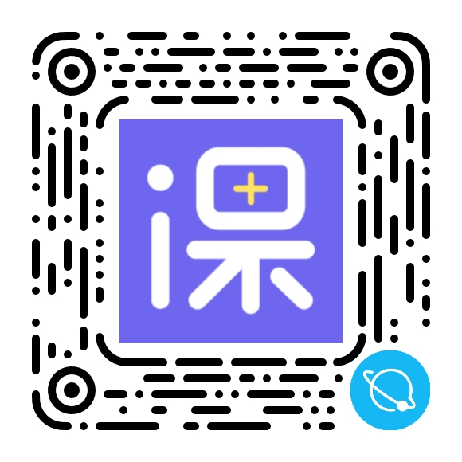

一、木犀课栈（已上线qq小程序）

小程序二维码（手机qq扫描）
测试账号
github地址：https://github.com/MuxiKeStack/muxi_KeStack_fe
账号：2018212654
密码：muxitest
二、项目技术
- Taro
- qq小程序开发者工具
- eslint+prettier
- Taro-ui组件规范
三、项目背景
大二刚加入木犀，团队为丰富互联网产品，扩大影响力，产品组进行市场调研和需求分析后，决定做一款辅助校内学生评价课程的小程序，当时我只接触过react框架（看过文档，构建项目使用过）和css基本知识（会用但没系统学习过flex等技术，不能准确写好css），缺乏项目经验。
四、项目任务
在积极争取下，我分配到评课广场、发布评课、选课清单三个页面，当时的使用的要学习的主要技术大致有Taro，eslint+prettier，fetch数据请求封装，block与inline-block布局，qq小程序开发规范（文档），qq小程序开发者工具的使用，本地设置代理测试地址，参考Taro-ui组件规范写组件，真机调试，熟悉生命周期逻辑，熟悉后端swagger文档，使用设计蓝湖设计稿等等新知识。
同时需要快速与团队的产品组、后端组、设计组熟悉交流，具有诸多挑战面对。
同时需要快速与团队的产品组、后端组、设计组熟悉交流，具有诸多挑战面对。
五、项目行动
在项目开发过程中我积极主动，最先完成页面任务并帮其他前端组组员分担压力。有时会与别的组员讨论代码，比如帮助写"Rate"组件，修复数据请求逻辑，小程序端上传静态文件方法，进行组内学习。
过程中很感激其他组的成员的友善帮助，第一次体会团队合作。印象最深的是调用后端一个list接口的时候，因为没写过项目，我下拉拉取新页面的逻辑是"page不变，增加limit参数"，被后端指出错误，第一次明白此api应该是"limit不变，递增page参数"，从此铭记错误，经常请教接口问题，毫无懈怠写代码，力求规范完美。
之后经常与别的组交流学习，与后端交流讨论接口参数与返回错误，与设计组讨论缺少组件的UI设计，与产品组讨论页面之间的逻辑，与他们结下深厚友谊，并且学习到很多项目开发过程中的流程规范。
在写的过程中经常遇见未知的bug与错误，大多需要花费许多时间网上搜索与组员交流，在解决问题过程中积累知识，收获经验。
过程中很感激其他组的成员的友善帮助，第一次体会团队合作。印象最深的是调用后端一个list接口的时候，因为没写过项目，我下拉拉取新页面的逻辑是"page不变，增加limit参数"，被后端指出错误，第一次明白此api应该是"limit不变，递增page参数"，从此铭记错误，经常请教接口问题，毫无懈怠写代码，力求规范完美。
之后经常与别的组交流学习，与后端交流讨论接口参数与返回错误，与设计组讨论缺少组件的UI设计，与产品组讨论页面之间的逻辑，与他们结下深厚友谊，并且学习到很多项目开发过程中的流程规范。
在写的过程中经常遇见未知的bug与错误，大多需要花费许多时间网上搜索与组员交流，在解决问题过程中积累知识，收获经验。
六、项目结果
最终在2020年9月，木犀课栈主体前端后端完成，帮助产品组在qq小程序开发者平台提交审核上线，并在产品组的推广下，在2020年9月的开学选课浪潮中获得了很多新用户，现有几百条课程信息及1200用户的问题交流群，帮助到别的同学选课，口碑良好，并持续积累数据与用户。
七、项目收获
- 首次项目开发经验
- qq小程序类前端开发经验
- 类React逻辑的Taro框架学习经验
- 团队合作，沟通交流经验